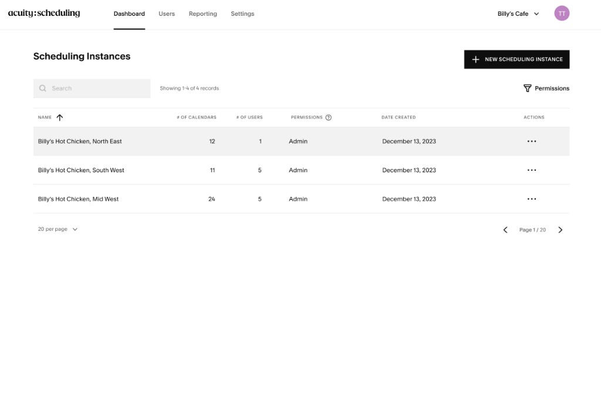

Turning Acuity Enterprise into a unified platform for managing teams, permissions, and scheduling across locations.
User research & usability testing
22 of 23 customers renewed (96% retention)
A product built for solopreneurs had to support organizations operating at a much larger scale.
Acuity Scheduling helps service businesses sell appointments, subscriptions, and packages, send reminders, and accept payments. Its core experience was designed for people running their own businesses. Enterprise customers brought a different set of needs: nationwide or global operations, multiple locations, and layers of people with different responsibilities.
The Enterprise offering was largely an additional dashboard on top of the existing product. A dedicated team formed to support these customers and grow the business, with a goal of increasing contracts by 50% in 2024. We needed to understand where the experience was breaking down before deciding what to build.
I partnered with the PM to research five Enterprise customers and audit the existing experience.
Our interviews established how customers used Acuity across their organizations. Alongside the PM and an Acuity Enterprise Specialist, I explored the product to identify workflows that felt painful, inefficient, risky, or unfinished.
The people managing these organizations ranged from heads of IT and sales managers to provider enablement specialists and founders. Their work involved adding contributors, assigning scheduling instances, syncing calendars, and creating booking pages. Healthcare, retail, and franchise customers needed centralized oversight, role-based access, and support for multiple locations.
Organization managers were filling the gaps with manual work and risky access practices.
No centralized organization management
Managers could not change organization-wide settings in one place. They had to impersonate contributors to enter individual instances or locations, without an audit trail.
Credentials shared over email
Managers sent account credentials to contributors by email. This created security concerns and left people searching for lost login information.
Equal access for every contributor
Everyone added to an organization received the same access. Without role-based permissions, there were too few safeguards against accidental destructive actions.
An invitation process that required manual follow-up
Managers could not assign someone to a scheduling instance until that person created their account. They had to track pending contributors and return to complete the setup.
Give organization managers one place to manage their team across Acuity instances.
I proposed a unified Enterprise platform with organization-level settings and user management, explicit roles and permissions, and clear paths between Enterprise and the individual scheduling experience. The aim was to reduce repetitive work and access gaps while giving customers more control as they expanded.

Make everyday administration easier to see and act on.
A new Enterprise dashboard
Organization-level navigation gives managers a home for their work. Navigation changes by role, while the dashboard brings scheduling instances together in one view.
User management with roles and invitation status
Managers can add people and choose their permissions. Active and Invited filters make it easier to distinguish established teammates from people still joining the organization.
The hardest question was how to move between the organization and an individual scheduling instance.
Enterprise controls and instance-level controls serve different purposes. I explored three ways to make that hierarchy understandable, balancing familiar Squarespace patterns with the need to keep organization management easy to find.
Left navigation
A familiar Squarespace flyout let users move between instances. It raised ownership and implementation questions with the Navigation Team, and risked hiding Enterprise settings. Testing also showed that switching instances was not a common task for many contributors, who only had access to one location.
Conditional top navigation
This preserved the existing pattern, but removed Enterprise navigation when someone entered Acuity Scheduling. Users disliked the change; it felt as though the navigation had been taken away.
Persistent top navigation
Keeping Enterprise links visible performed best in testing. Users understood the top bar as organization-level navigation and the left sidebar as controls for the scheduling instance they were viewing.

Core tasks felt relatively easy, with permissions remaining the most complex workflow.
In usability testing, we measured task ease with the Single Ease Question on a 1–7 scale. Creating a scheduling instance and finding account settings scored highest at 6.8. Changing roles and permissions scored lowest at 5.8, showing where the experience still carried more complexity.
Add a scheduling instance
6.8 / 7
Add a user
6.4 / 7
Navigate between instances and Enterprise
6.1 / 7
Change roles and permissions
5.8 / 7
Account settings
6.8 / 7
The details had to work for incomplete setups and sensitive organization changes.
I worked through cases such as trying to remove the last organization manager, handling expired or cancelled invitations, and showing invited users who had not yet been assigned a scheduling instance. These states needed to be clear alongside feedback for invitations, permission changes, instance assignments, and removals.
The work also introduced multi-step wizards, filters, skeleton loaders, and loading states. For new components, the process began with guidance from the Squarespace Design Platform Team. When an existing solution did not fit, ideas went through design critique before being assessed for incorporation into Rosetta.
We narrowed the first release to the workflows needed to launch.
Bulk assignment to scheduling instances
Assigning a teammate to multiple instances at once was descoped. Organization managers could assign one scheduling instance at a time.
Two-step verification for API keys
An additional verification step was considered as a security precaution, but was not required for launch.
Enterprise contracts grew by 81%, surpassing the 50% target, and 96% of customers renewed.
We acquired 17 new Enterprise contracts, and 22 of 23 customers signed for at least one more year. Customers spent fewer hours on user management and could expand to new locations more easily.
Enterprise Account Managers received less customer outreach, freeing them to focus on higher-order work. The team also gained new customer stories for marketing. One example was Mejuri: after switching to Acuity Scheduling Enterprise, it added more than 75 calendars for new store locations and had more than 100 store associates managing their own calendars.